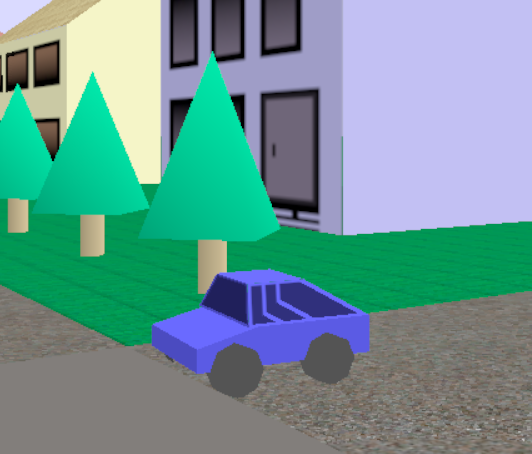

Page 8: A Car for Graphics Town (ex 5)
The pedagogical goals of this exercise are to give you practice defining shapes with meshes and adding textures to them.
In graphics town, you will need vehicles. Cars, trucks, trains, or maybe other things.
So in this page, please make one. It has to have wheels on the ground. But other than that, few restrictions - you can have a primitive (like a box or something) for the body. The vehicle must either have shape or texture to make it look like a car/truck/train.
Here are some simple ones from that 2000 graphics town I mentioned. You should be able to make something nicer.
 
If you want a simple train made out of primitives, you can look at the threejs built-in geometry tutorial (with train) for a simple train made out of primitives. If you use it, be sure to give attribution (and put it into the graphics town framework).
To get the points for this page, you just have to have a simple car (defined as a GrObject in
08-08-01-car.js
and placed into the world in
08-08-01.js
). Of course, it can be a fancier vehicle. Don’t worry about making it drive around (that’s a future workbook).
You will need vehicles for the future assignments, so effort you put into making nice vehicles now will pay off in future workbooks. You can make more vehicle types later - but you may want to do some of the work now.
Please do not re-use one of the pieces of construction equipment you made for the previous workbook.
The rules for finding and importing object files and textures are the same as for Page 6 (Generative AI for Mesh).
Your Vehicles should be subclasses of GrObject. Your work goes into
08-08-01-car.js
and modify
08-08-01.js
. You’ll see it in
08-07-01.html.
The End of the First Half
That’s the end of the first half of the work book! Don’t forget to commit your work, push it to GitHub, and complete the WB8 Workbook Form.
Be sure to include any texture files you added!
Next: Fancy Texturing